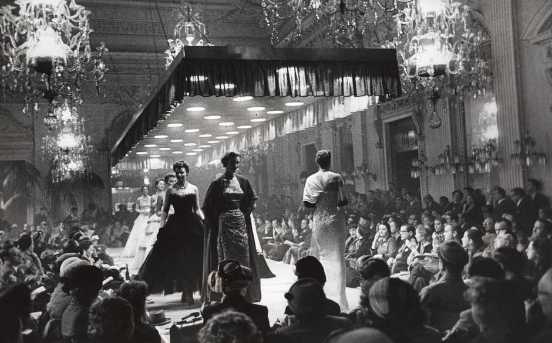
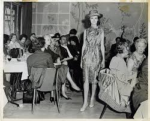
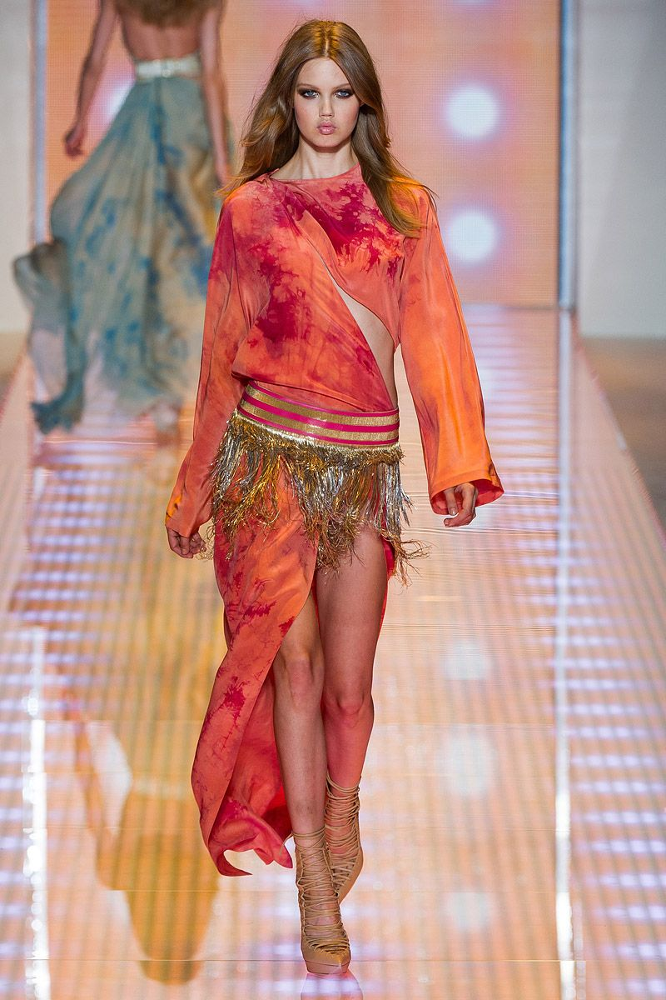
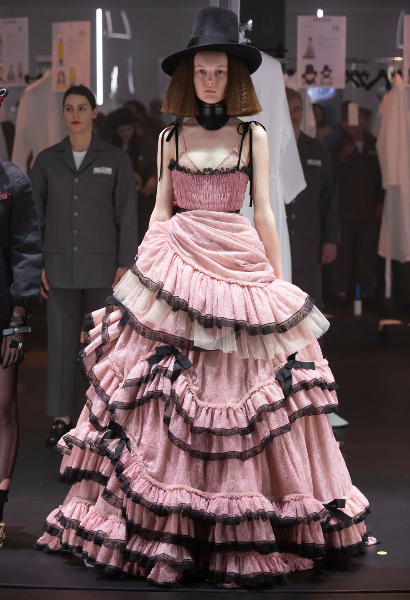
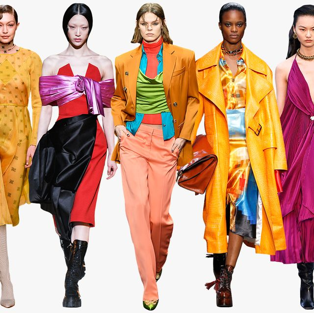
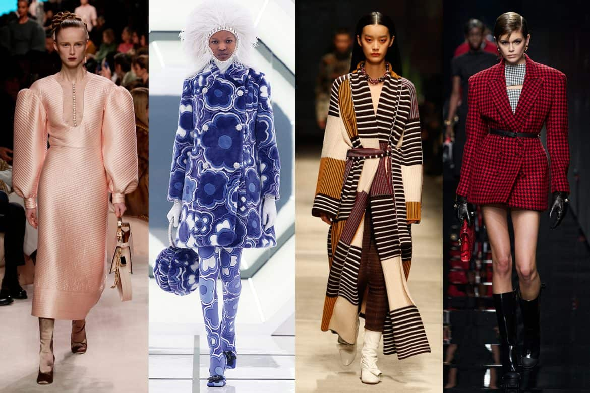
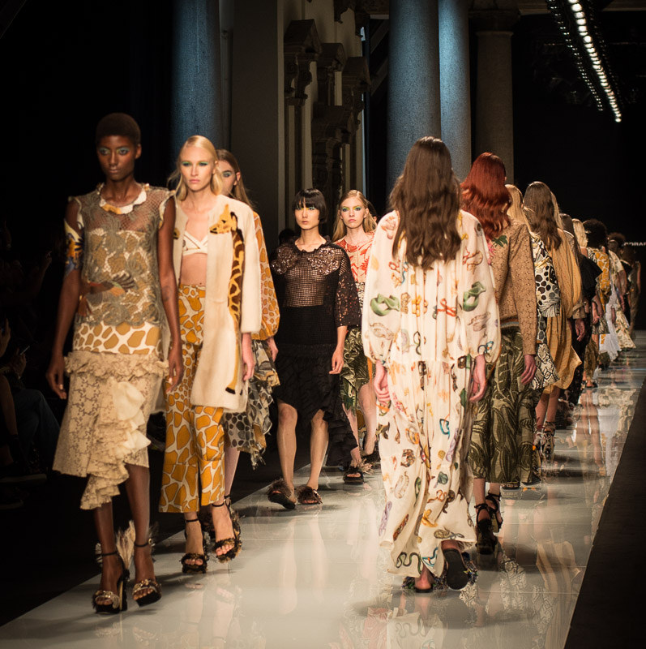
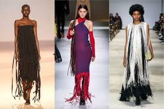
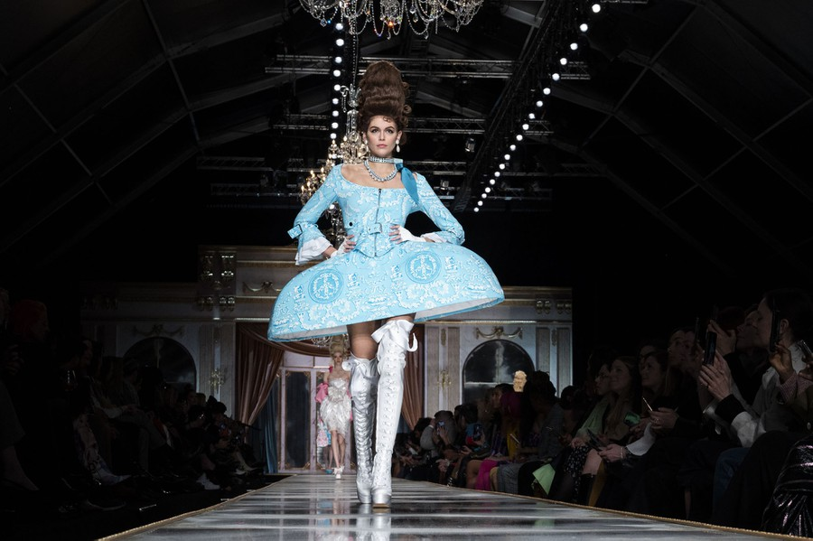

Milans fashion week
When was the first Fashion week in Milans history ??
Milan Fashion Week was and is still one of Milan's biggest events every year. It was born in 1958, with the establishment of the National Chamber for Italian Fashion (or Camera Nazionale della Moda Italiana). This organization serves as the regulating body for Italian fashion, and also the organizer of most Milan shows during Fashion week. Of course, there are always exceptions — Dolce & Gabbana and Gucci organize their shows independently from the Chamber.
A brief back-ground on the topic
With a fashion industry specializing in luxury goods dating back to the middle ages, the city of Milan, Italy has a well-earned reputation as one of the most stylish cities in the world. Historically, Milan developed a name for high-quality textiles and tailoring. During the 19th Century, the Milanese began adapting Parisian styles to fit local tastes, which generally tended to be simpler and more conservative than their French counterparts.
In the 20th Century, Milan continued to grow as an international trendsetter for the latest fashions, with a number of big designers making the city their home. Milan fashion trends became popular for their simplicity and elegance… and for being more affordable than the fashion emerging from Paris and Florence.
Milan Fashion Week designers
Some of the big events during the Milan Fashion week include the Prada Fashion and Gucci fashion shows. You will also see Roberto Cavalli, Versace, Daniela Gregis, Marco de Vincenzo, Baldini, Marco Rambaldi and many more. Milan fashion week also features up-and-coming designers; Cristiano Burani and Au Jour Le Jour both got their start on the Milan Fashion Week runway.
What happens during the Milan Fashion Week?
The Milan Fashion Week lasts just a few days, but it transforms the city into a pure European fashion capital!
The streets of Milan turn into veritable catwalks, filled with VIPs and fashion lovers from all over the globe. Here and there the fashion shows go on.
There are famous and emerging designers, plenty of shows, great collections. What is more during the Milan Fashion Week it is possible to have a personal talk with the designers and even have a glass of wine during the traditional evening aperitive. The fashion spirit fills the city!
By the way, they say, the easiest way to get an idea about the latest and upcoming trends is just walk around Milan during the Milan Fashion Week and check out the street style.
     When does it happen?
Today’s Milan Fashion week features more than 40 shows in venues all over the city, many open to the public. The Fashion weeks are held semi-annually to showcase the upcoming season’s fashion. Women’s events are held in September/October to showcase spring and summer collections, and in February/March to feature fall/winter trends. Men’s fashion shows are also held in June and January.